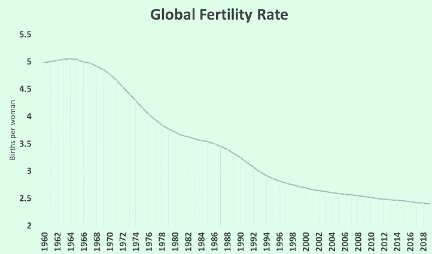

Fertility Rate Decline: Our population is under threat
Introduction
Over the last two centuries the human population has significantly increased from 1 billion people in the year 1800 to currently just under 8 billion people. Between 1950 and 1987, the population had a dramatic increase, doubling from two and a half billion to five billion people. Why is this? This is because as technology has improved, the quality of life has followed accordingly – which has led to decrease in mortality rates as well as better care for the elderly. A combination of these factors means that there are more people on this planet. However, a dire problem is arising now – one that threatens our population growth dramatically. The population is predicted to peak in the mid 2080’s, before entering a decline. This is because of a decline in fertility rates.
It has previously been the norm for women to prioritise the role of mother and housewife, and consequently it was valued as a moral imperative that they bear children. However, due to an empowerment of the rights and roles of women, more and more women are choosing not to have children. This has led to a decline which has now put our population in danger. The replacement rate, how many children must be born per woman to keep the population the same, stands at 2.1 children per woman. In many countries, the amount of children per woman is below this and as a result we will soon notice the results of having less people in the newest generation.

The Potential Threats
The consequences of this decline in fertility rates are far worse than they likely appear on the surface. However, the issues set to arise from a continuation of this trend are drastic and should be acted upon soon. Given the significant increase in the quality of life over the last couple centuries, our healthcare system is amazing — because of this mortality rates are at an all time low and people are living much longer lives, and this is continuously lengthening. Subsequently, the elderly will begin to outrank youths, which will significantly reform our economy, threatening to bring it to the brink of collapse. The first noticeable problems stem from the larger portion of the elderly population being retired, meaning that there will arise an imbalance in our labour force — more will be consumed and less will be produced. More retirees will also lead to a higher demand on the healthcare and retirement industries, as well as this the cost of living, albeit already high, will increase evermore to supplement the economic disruptions. This change in the cost of living will significantly impact our lives and economy and will scale up the cost of living crisis which is already in action — more and more people will be living in shared households, working for longer and delaying their retirement. These consequences of fertility rate decline will completely reshape our economy and productivity, so how can this be prevented and why is it happening?
Why are people not having children?
Until recently, it has been the norm for all women to have children and this has kept the average amount of children per woman far above, often around double, the replacement rate. However, this has evidently taken a substantial turn and there are many factors influencing this — the most significant of these being a shift in gender norms. Around the time of the first world war more women began entering the workplace, and this was further encouraged toward the middle of the nineteenth century. For the first time the societal roles of women in society shifted from primarily housewives to workers, allowing the option of having a career to become available to everyone — which is evident in our modern world. This has led to many women shifting their focus from mothers to workers as showcased in a recent study by Pew Research Centre which showed that 21% of women between the ages of 18 and 34 do not intend on having children. As well as being influenced by the shift in gender norms, there is also another problem many couples face when considering having children — the current cost of living crisis. This causes significant financial strain on families, as suggested by a recent survey indicating that 56% of Australian families with children under 18 are reporting high levels of financial stress, and as a result this has caused many couples to reconsider having children.
How can this be fixed?
Although it is obvious that the gender norms and traditions have evolved over the last century or so and this must be recognised, there are still solutions to this decline in fertility rates. At the centre of this stands the necessity for more corporate focus to shift on supporting mothers in the workspace by becoming more flexible with working mothers in their work hours and allowing more remote work, and also allowing more paid leave and bonuses. As well as this, offering mental health support and creating a more inclusive environment in the workspace would also make a difference. However, much of these efforts by corporations would result in money and resources being thrown into something with minimal output — this is why the only way to solve this problem is financial encouragement from the government to these corporations. By introducing subsidies and other methods of financial encouragement, industry will have good reason to support working mothers and the government will also benefit by keeping economic stability.